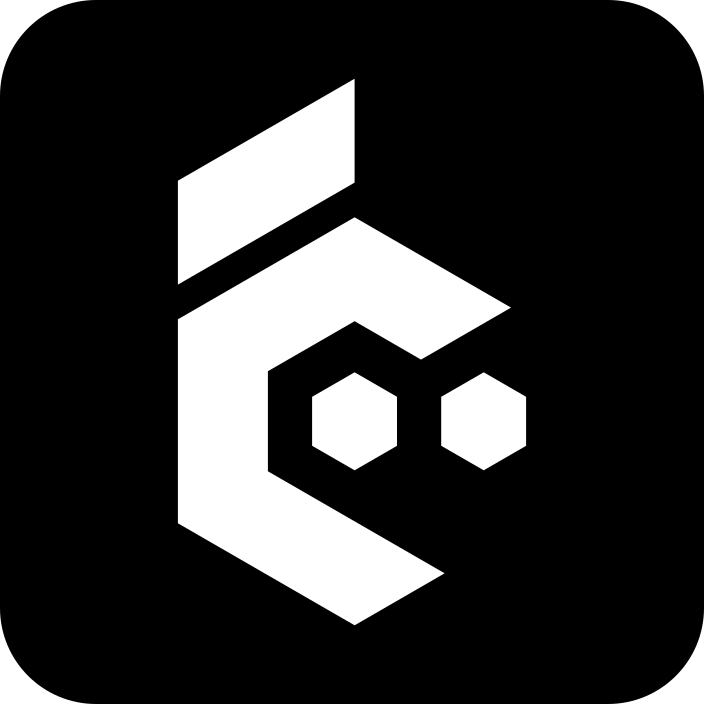

Starting cezar…
Launching the local cockpit.
Help us fix this
Sends the error shown here, and its log if there is one, to the cezar team, with your home folder and project paths masked. Nothing else.
✓
Thanks, the cezar team has your report
We will look into it shortly. A fix reaches you as an update, which the app installs on its own.